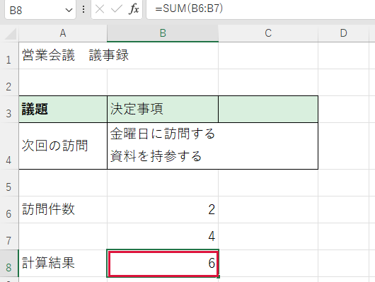

数字を合計したい
連続した欄にある数字を足し合わせます。
操作手順
- 結果を出す空欄をクリックします。例ではB8（B列の8行目）です。
- 半角で =SUM(B6:B7) と入力します。SUMは合計、コロンは「最初の欄から最後の欄まで」です。
- Enter を押します。入力した式が計算結果に変わります。

できたか確認
B6に2、B7に4なら、結果は6です。
注意点
合計を出す欄自体を集計する範囲に含めないでください。
連続した欄にある数字を足し合わせます。

B6に2、B7に4なら、結果は6です。
合計を出す欄自体を集計する範囲に含めないでください。